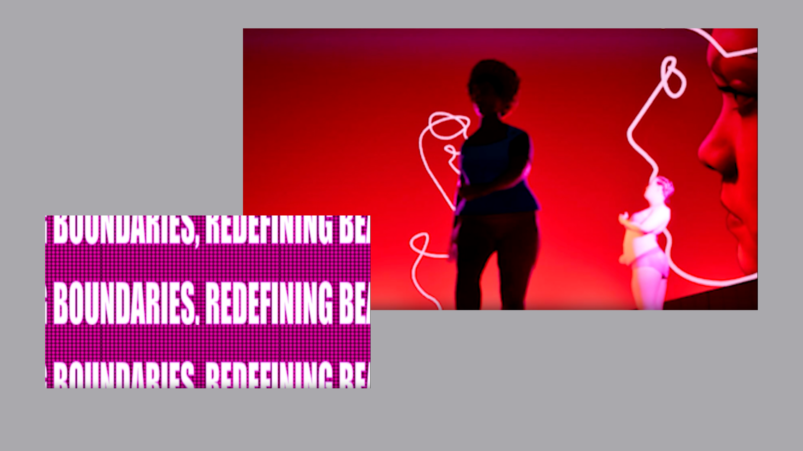

Speculative Design · 3D Animation

This collaborative project is a video animation that explores the impact of media-driven beauty standards on mental health. Through speculative storytelling, it envisions a more inclusive future of beauty in New York City.
Crafted using 3D rendering and motion graphics, the animation blends mixed media formats with motion tracking, dynamic video editing, and immersive sound design. Adobe After Effects, Premiere Pro, and Unity were used to create a visually rich and engaging narrative, pushing the boundaries of digital storytelling.